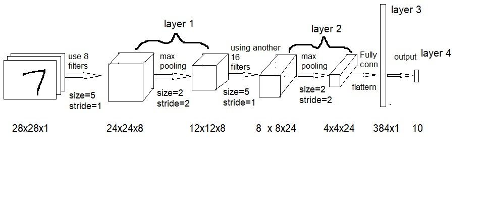

Section 1. What is a convolutional neural network?
- It tries to find an edge or pattern in an image
- It usually consists of one or more convolution plus pooling layer, and one fully connected (FC) layer
- When doing convolution on an image, we use a 5x5 filter. Further, we may apply several such filters to detect edge/pattern along several lines
- The cost function will be
- The last layer is the output layer where we use a so-called Sigmoid activation, so that several outputs can be used.

Section 2. Load TensorFlow for JavaScript libraries
We will use TensorFlow.js to train the model.
Click the 'Run' button below to import two JavaScript libraries.
Section 3. The dataset of images
We will use a dataset from Google, https://storage.googleapis.com/learnjs-data/model-builder/mnist_images.png, and their labels, https://storage.googleapis.com/learnjs-data/model-builder/mnist_labels_uint8.
{kind=link}
The dataset is a big image file. It contains 65,000 images, each of size 28 x 28 x 1. The label file contains 65,000 labels. Each image uses 10 numbers to indicate which digit the image represents.
Section 4. The JavaScript module to process the dataset
We will use a JavaScript class from './data.js' to process the dataset.
Section 5. We will show 20 images from the dataset
Section 6. Define a CNN
Our CNN has an input shape of 28 x 28 x 1.
The first layer is a convolution + pooling layer. We will use 8 filters, each with a kernel size of 5 x 5 and a stride of 1. The activation function used is 'relu'. We also apply max pooling with a size of 2 x 2 and a stride of [2, 2].
The second layer is also a convolution + pooling layer. This time, we use 16 filters, each with a kernel size of 5 x 5 and a stride of 1. The activation function used is 'relu'. We again apply max pooling with a size of 2 x 2 and a stride of [2, 2].
The third layer is a fully connected layer with a shape of * x 1.
The last layer is the output layer, with 10 outputs representing 10 digits. The activation function used is 'softmax'.
Section 7. Train the model using 5000 images
The batch size = 512, and epochs = 10
The test size = 1000
The callbacks have name='Model Training', tab='Model', styles='{height: 1000px'} metrics={'loss', 'val_loss', 'acc', 'val_acc'}
Section 8. Evaluate the model
We will obtain 500 images from the dataset mnistData.
We use the trained model to calculate the predictions and then compare the predictions with the provided labels.
We then draw a confusion matrix to show for each digit, how many images are labeled for that digit and how many images that predicted to that digit. Further, how many differences.